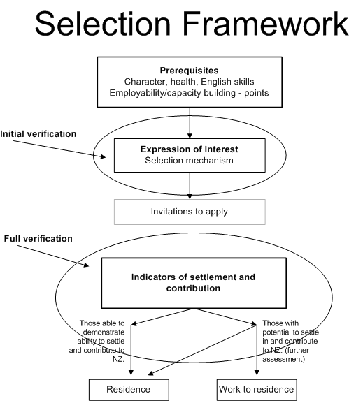

- This is not current policy - |
|
|
|
SM2 Overview of Skilled Migrant Category Policy (17/12/2003)
- A person who is interested in applying for residence under the Skilled Migrant Category may complete an Expression of Interest form in the prescribed manner.
- Expressions of Interest which meet prerequisites for health, character, English language and age, and have a point score of 100 or more points, are entered into the Pool of Expressions of Interest.
- Points for employability and capacity building factors are claimed by a person expressing interest in accordance with the requirements set out in Skilled Migrant (Application) Policy.
- Expressions of Interest in the Pool are ranked on the basis of their point scores. Periodically, the General Manager of the New Zealand Immigration Service (NZIS) determines the numbers of Expressions of Interest to be selected from the Pool and as a result a selection point is identified and set. Expressions of Interest with point scores that meet or exceed that selection point set by the General Manager will be selected from the Pool.
- A selected Expression of Interest may result in an invitation to apply for residence under the Skilled Migrant (Application) Policy being issued, subject to an assessment of the credibility of the information provided in the Expression of Interest and whether the Expression of Interest indicates the presence of any health or character issues that may adversely affect the ability of the person expressing interest to be granted residence under the Skilled Migrant Category.
- Only a person invited to apply may apply for residence under the Skilled Migrant Category.
- If a person is invited to apply, information provided in the Expression of Interest, and any further evidence, information and submissions provided by the applicant (including information concerning ability or potential to successfully settle in and contribute to New Zealand), will form the basis for determination of a subsequent application for residence under the Skilled Migrant Category.
- Applications for residence, resulting from an invitation to apply, must include:
- information and evidence to support the claims made in the Expression of Interest; and
- information concerning any relevant fact (including any material change in circumstances that occurs after the Expression of Interest was selected) if that fact or change in circumstances may affect the decision on the application. Such a relevant fact or change in circumstances may relate to the principal applicant or another person included in the application, and may relate to any matter relevant to Skilled Migrant Category policy.
- Applications will be assessed against policy as set out in sections SM4 to SM20 of the Skilled Migrant (Application) Policy.
- Principal applicants under the Skilled Migrant Category will be assessed against:
- health, character and English language requirements; and
- employability and capacity building requirements; and
- settlement and contribution requirements.
- Assessment against settlement and contribution requirements (see SM20) will take into consideration the application as a whole including information gained at interview, if an interview is conducted. The assessment concerning settlement and contribution may result in:
- the grant of residence; or
- deferral of the decision on the residence application and the issue or grant of a work visa or permit to enable a principal applicant to become established in ongoing skilled employment in New Zealand; or
- decline of the residence application.
- If a decision is deferred on the residence application and the principal applicant becomes established in ongoing skilled employment in New Zealand, the application for residence will be approved.

Effective 17/12/2003